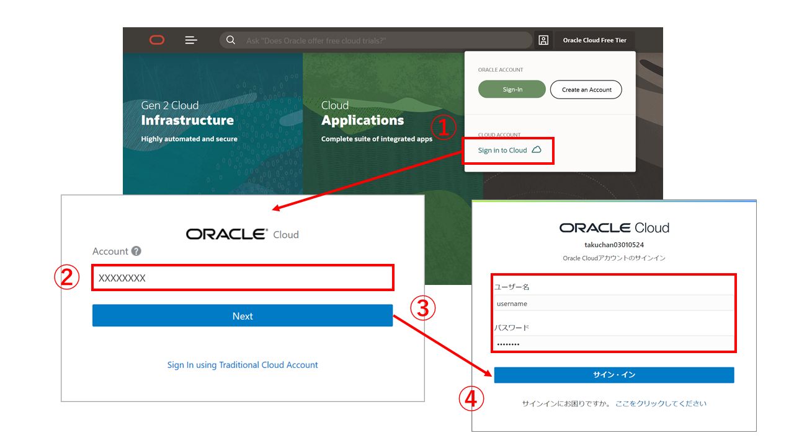
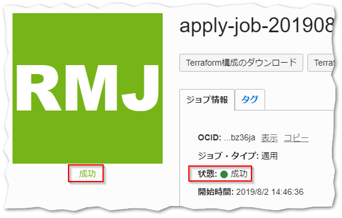
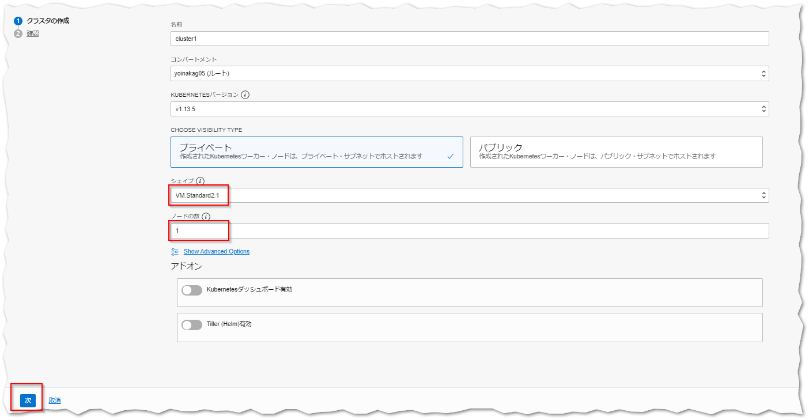
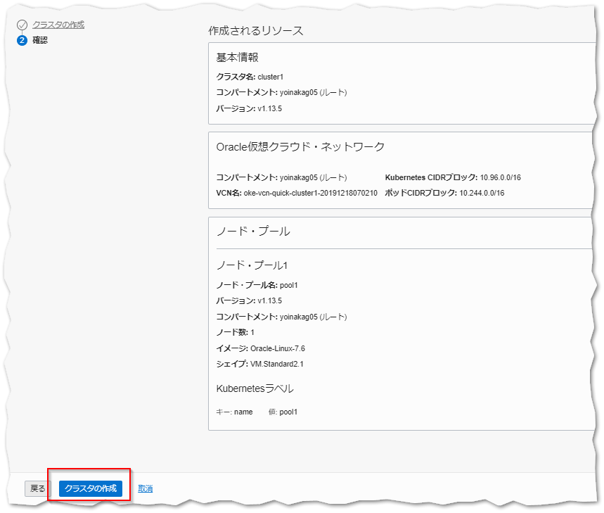
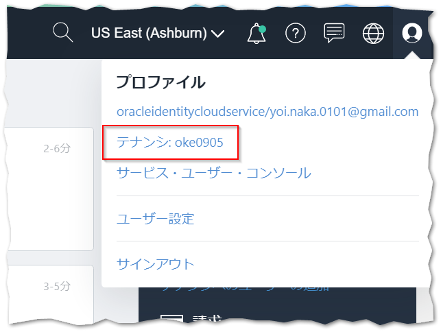
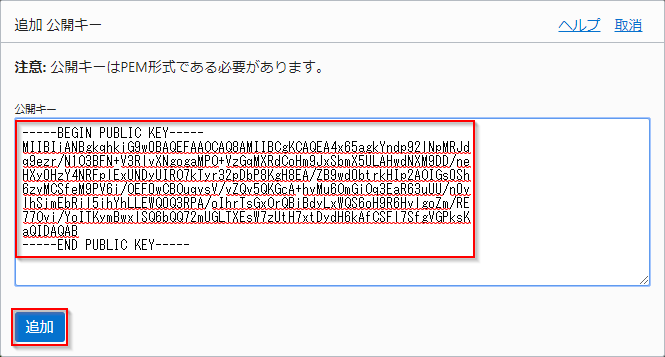
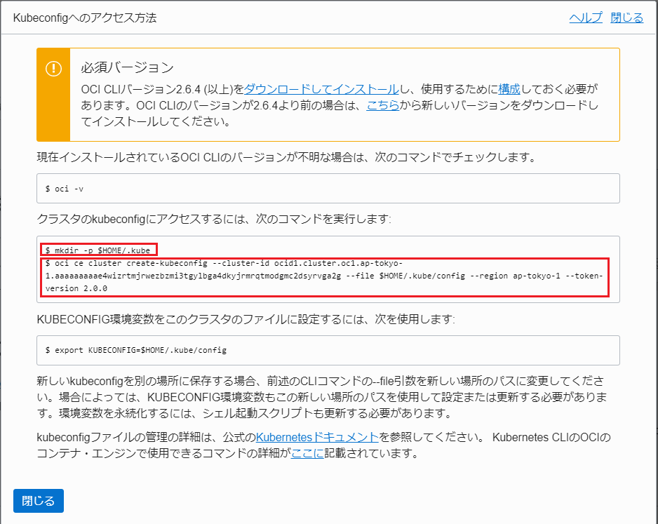

OKEでKubernetesを始めてみよう（ハンズオンはこちらから）¶
Oracle Container Engine for Kubernetes（以下OKE）は、OracleのマネージドKubernetesサービスです。このエントリーでは、OCIやOKEを操作するためCLI実行環境の構築（Resource Managerを使用）と、OKEを使ってKubernetesクラスターをプロビジョニングするまでの手順を記します。
このカテゴリには以下のサービスが含まれます。
-
- Oracle Container Engine for Kubernetes (OKE):
- フルマネージドなKuberentesクラスターを提供するクラウドサービスです。
-
- Oracle Cloud Infrastructure Registry (OCIR):
- フルマネージドなDocker v2標準対応のコンテナレジストリを提供するサービスです。
前提条件¶
- クラウド環境
- Oracle Cloudのアカウントを取得済みであること
- ローカルPC
- 任意のSSHクライアントが実行可能であること
Note
このドキュメントでは、ローカルPCとしてWindows上にTera Termをインストールした環境を想定して手順を記します。
全体の流れ¶
手順の大まかな流れは以下のとおりです。
- Oracle Cloud Infrastructure(以下、OCI)上での準備作業
- OKEクラスターのプロビジョニング
- コマンド・ライン・インタフェース（以下、CLI）のセットアップ
0 . ゴールを確認する¶
はじめに、手順を最後まで実施したときにどのような環境が作られるか確認して、ゴールの全体像を掴んでおきましょう。手順を最後まで行うと、下図のような環境が構成されます。
| 構成要素 | 説明 |
|---|---|
| Kubernetesクラスター | アプリケーションのコンテナが稼働するクラスター本体です。OKEをプロビジョニングすると、Oracle Cloudの各種IaaS上に自動的に構成されます。 |
| OKEコントロールプレーン | KubernetesのMaster Nodeに相当するマネージドサービスです。OKEをプロビジョニングすると利用するクラスター専用のコントロールプレーンが払い出されます。クラスターに対する管理操作はコントロールプレーンを経由して実行します。 |
| CLI実行環境 | OCIやKunernetesを操作するためのクライアント環境です。Oracle Cloud上にVMインスタンスをプロビジョニングし、ここからクラスターを操作する等の各種手順を実行いただきます。 |
| コンテナレジストリ | コンテナイメージを保存するレポジトリです。Oracle Cloudはコンテナレジストリのサービス（Oracle Cloud Infrastructure Registory）を提供しています。 |
1 . OCI上での準備作業¶
ここでは、OKEを利用する上で前提となるクラウド環境の各種設定と、CLI実行環境のセットアップを行っていきます。
1-1. OCIコンソールにアクセスする¶
OCIコンソールにブラウザからアクセスします。お持ちのクラウドアカウントを使ってサインインします。

- 1．Sign Inをクリックします
- 2．クラウドアカウント名（テナント名）を入力します
- 3．「Next」をクリックします
- 4．クラウドユーザー名とパスワードを入力して「サイン・イン」をクリックします
1-2. Resource Managerを利用して環境を構築する¶
本節での作業は、OCIのResource Managerと呼ばれるサービスを使って実施します。手作業でVMインスタンスの作成、CLIのインストール、ポリシーの設定などを行うこともできますが、Resource Managerを利用することでこれらの手順を自動化・省力化することが可能です。
Resource Managerとは
Resource Managerは、テキストで記述した構成情報に基づいて、Oracle Cloud上の複数のリソースをまとめて作成/変更/削除することができる、構成管理サービスです。Resource ManagerではTerraformの形式で構成情報を記述します。
1-2-1. スタックの作製¶
Resource Managerを利用するには、構成情報を記述したテキストファイルを作成し、それらをzipアーカイブにまとめておく必要があります。Resource Managerアーカイブは既に作成済みですので、ブラウザで ハンズオンキットのReleaseにアクセスしてダウンロードします。

oke-handson-prerequisites.zipというファイルをダウンロードしてください。
次に、画面左上のハンバーガーメニューを展開し、リソース・マネージャを選択します。
リソース・マネージャの画面で、スタックの作成をクリックします。

スタックはリソース・マネージャ サービスによって管理されるTerraformコマンドの実行環境です。ここでResource Managerアーカイブをアップロードしてスタックを作成することで、アップロードされたTerraformテンプレートの実行環境がクラウド上に構成されます。
スタックの作成画面で、.zipファイルをここにドロップします または 参照と表示された領域にダウンロードしたResource Managerアーカイブをドロップし、その後次をクリックします。

Resource Managerが自動的に各環境毎のTENANCY_OCIDとCOMPARTMENT_OCIDとRegionの変数に適切な値を投入します。変数が投入されていることを確認し、次をクリックします。

Note
Oracle Cloud Infrastructureは、北米、東京を含む多数のデータセンターを利用可能です。ここではアカウント作成時に設定されたホームリージョンのまま、手順を進めていきます。
入力内容の確認画面が表示されますので、作成をクリックしてスタックの作製を実行します。

スタックの作製が完了すると、作成済みのスタックの詳細画面が表示されます。

1-2-2. ジョブの実行¶
それでは実際にスタックを実行して環境の構成を行っていきます。
スタックの詳細画面でTerraformアクションメニューを展開し適用をクリックします。

「適用」ダイアログで適用をクリックします。

これで、クライアント環境の構成とOKEクラスターの作成に必要なジョブが開始されます。
ジョブの完了には数分程度かかりますが、その間、ログに表示される内容を確認してみてください。Resource Managerはクラウドの環境内でTerraformを実行しており、その結果として標準出力に出力される内容がログに表示されます。

ジョブの状態が「成功」になったら、正常にジョブが完了しています。

1-3. CLI実行環境にログインする¶
ジョブの実行が完了したら、実際にCLIの実行環境に接続してみましょう。画面左下にある出力をクリックしてください。
ここでは、ジョブを実行した結果作られたリソースに関連する情報を、確認することができます。ここまで正常に完了していれば、oke-clientとprivate_key_pemという情報が表示されているはずです。これらは、それぞれCLI実行環境のIPアドレスとSSH秘密鍵です。

oke-clientは、値をテキストファイルにコピー＆ペーストするなどして控えておいてください。
private_key_pemの値は、コピーという部分をクリックするとクリップボードに値が保存されます。こちらは、新たにテキストエディタを起動してペーストし、「privatekey.pem」というファイル名で保存しておいてください。

次に、デスクトップにあるTera Termのショートカットアイコンをダブルクリックし、Tera Termを起動します。「Tera Term: 新しい接続」というダイアログが表示されたら、ホストに上の手順で控えたIPアドレスを入力し、OKをクリックします。

「セキュリティ警告」というダイアログが表示されたら、何も変更せずに続行をクリックします。

「SSH認証」というダイアログが表示されたら、以下のように値を設定してOKをクリックします。
| 項目 | 入力値 |
|---|---|
| ユーザー名 | opc |
| ラジオボックスの選択 | RSA/DSA/EDCSA/ED25519を使うをオンにし、上の手順で保存した秘密鍵のファイルを(privatekey.pem)を選択する。 |
| （上記以外） | （デフォルトのまま） |

CLI実行環境への接続が成功すると、以下のようなコンソール出力が表示されます。
Last login: Fri Aug 2 04:21:15 2019 from 156.151.8.3 [opc@oke-client ~]$
必要なCLIはこの時点でインストール済みですので、例えば以下のようなコマンドを実行することが可能です。
kubectl version --client --short
以下のような結果となれば、kubectlは正常にインストールされています。
Client Version: vX.XX.X
上記は、kubectl（Kubernetesの管理用のコマンドラインツール）の、バージョン情報を表示するコマンドとその結果です。
以上で、準備作業は完了です。
2 . OKEクラスターのプロビジョニング¶
ここでは、OKEクラスターのプロビジョニングを行います。ここでの手順を実施することにより、OKEのコントロールプレーンとKubernetesクラスターの構築が同時に行われます。
はじめに、OCIコンソール画面左上のハンバーガーメニューを展開し、開発者サービスを選択します。
クラスタ一覧画面で、クラスタの作成をクリックします。

次のダイアログでクイック作成を選択し、ワークフローの起動をクリックします。
次のダイアログで、任意の名前を入力し、バージョンを選択します。ここではデフォルトのまま進めていきます。
"シェイプ"VM.Standard2.1を選択します。
ノードの数はワーカーノードの数を指定します。デフォルトで「3」が指定されていますが、本ハンズオンでは最小構成である「1」に変更してください。
ノード数について
ノードはリージョン内の可用性ドメイン全体（または、東京リージョンなど単一可用性ドメインの場合、その可用性ドメイン内の障害ドメイン全体）に可能な限り均等に分散されます。 実運用の際は可用性を考慮し、適切なノード数を指定してください。
そして、ダイアログの下まで移動し次をクリックします。

次のダイアログは入力内容を確認し、クラスタの作成をクリックします。

デフォルトの設定では、クラスタが必要とするネットワークリソース等の構成が自動的に行われます。途中経過がダイアログに表示されますので、「クラスタと関連ネットワーク・リソースが作成されました」というメッセージが表示されるまで待った後、Closeボタンをクリックします。

クラスタの詳細画面表示されたら、クラスタ・ステータスに表示される内容を確認してください。この時点では作成中と表示されますが、プロビジョニングが完了するとアクティブとなります（完了までにはおおよそ5～10分程度かかります）。
受講者の方へ
クラスタが完成するまでの間に次章「3. CLIのセットアップ - 3-1-2. OCI CLIのセットアップ」までの手順を進めてください。
3 . CLIのセットアップ¶
OKEクラスターを利用するには、以下の2つのCLIを、ご自身の環境に接続できるようにセットアップしておく必要があります。
| ツール | 説明 |
|---|---|
| OCI CLI | Oracle Cloud InfrastructureのCLIです。ここでは、OKEクラスタとの接続情報を取得するために利用します |
| kubectl | Kubernetesの各種管理操作を行うためのCLIです。OKEはオープンソースのKubernetesクラスターがそのまま動作しますので、一般的なCLIをそのまま利用することができます。 |
以下、2つのCLIのセットアップを順次行っていきます。
3-1. OCI CLIをセットアップする¶
ここでは、OCI CLIのセットアップを行います。
3-1-1. テナンシのOCIDの確認¶
OCI CLIのセットアップでは、CLIをどのテナンシのユーザーアカウントとして実行するかを設定するために、テナンシ、ユーザーのOCID（識別子）が必要になります。はじめに、このテナンシのOCIDを取得しておきます。
OCIコンソール画面右上の人型のアイコンをクリックし、展開したプロファイルからテナンシ:<テナンシ名>をクリックします。

テナンシ情報OCIDの右側にあるコピーをクリックすると、OCIDがクリップボードにコピーされます。
この値は後の手順で利用しますので、テキストエディタにペーストするなどして控えておいてください。
3-1-2. ユーザーのOCIDの確認¶
次にテナンシのOCIDを取得しておきます。
OCIコンソール画面左上のハンバーガーメニューを展開し、アイデンティティを選択します。

登録されているユーザーアカウントの一覧が表示されますので、ログイン中のアカウントに当たるエントリーを見つけてください。該当するエントリーのOCIDの右側にあるコピーをクリックすると、OCIDがクリップボードにコピーされます。
この値は後の手順で利用しますので、テキストエディタにペーストするなどして控えておいてください。
3-1-3. OCI CLIのセットアップ¶
それでは、OCI CLIのセットアップを行います。Tera TermでCLI実行環境にログインし、以下のコマンドを実行してください。
oci setup config
セットアップをおこなうためのインタラクションが開始されますので、提示される質問に対して、下表のように入力してください。
| 質問 | 応答操作 |
|---|---|
| Enter a location for your config [/home/opc/.oci/config] | なにも入力せず[Return] |
| Enter a user OCID | 先の手順で確認したユーザーのOCIDを入力 |
| Enter a tenancy OCID | 先の手順で確認したテナンシのOCIDを入力 |
| Enter a region (e.g. ap-mumbai-1, ap-seoul-1, ap-tokyo-1, ca-toronto-1, eu-frankfurt-1, uk-london-1, us-ashburn-1, us-gov-ashburn-1, us-gov-chicago-1, us-gov-phoenix-1, us-langley-1, us-luke-1, us-phoenix-1) | CLI実行環境の作成時に指定したリージョンを入力 |
| Do you want to generate a new RSA key pair? (If you decline you will be asked to supply the path to an existing key.) [Y/n] | Y + [Return] |
| Enter a directory for your keys to be created [/home/opc/.oci] | なにも入力せず[Return] |
| Enter a name for your key [oci_api_key] | なにも入力せず[Return] |
| Enter a passphrase for your private key (empty for no passphrase) | なにも入力せず[Return] |
CLIからOracle Cloud環境の操作をおこなう際は、コマンドの実行の度に認証が行われます。この認証のための鍵はあらかじめOracle Cloud上のユーザーアカウントに設定しておく必要があります。
上記のOCI CLIのセットアップの中で鍵ペアが作成されていますので、公開鍵をユーザーアカウントに設定していきます。
まず、Tera Termで以下のコマンドを実行し、公開鍵を表示しておきます。
cat ~/.oci/oci_api_key_public.pem
続いてコンソールに移り、ログイン中のユーザーアカウントのアカウント名部分をクリックしてください。
ユーザーの詳細画面をスクロールして公開キーの追加をクリックします。

「追加 公開キー」ダイアログの入力欄に、先ほとTera Termに表示した公開鍵をペーストし、追加ボタンをクリックします（-----BEGIN PUBLIC KEY-----と-----END PUBLIC KEY-----の行も含めてペーストします）。

以上でOCI CLIのセットアップは完了です。
3-2. kubectlをセットアップする¶
次に、kubectlのセットアップを行って実際にクラスターにアクセスしてみます。
OCIコンソール画面左上のハンバーガーメニューを展開し、開発者サービスを選択します。

先の手順で作成しておいたcluster1の名前をクリックします。
受講者の方へ
ここからの手順を進めるには、OKEクラスターのプロビジョニングが完了している必要があります。クラスターの詳細画面で、クラスタ・ステータスがアクティブとなっていることを確認してください。まだ作成中だった場合には、ステータスが変わるまで少しお待ち下さい。
クラスターの詳細画面で、Kubeconfigへのアクセスをクリックします。
「Kubeconfigへのアクセス方法」ダイアログに、kubetctlの設定ファイルを取得するためのコマンドが表示されますので、これらを順次実行していきます。

1つ目のコマンドは、設定ファイルを格納するためのディレクトリの作成です。
mkdir -p $HOME/.kube
2つ目のコマンドは、OCI CLIの設定ファイル取得用のコマンドを実行しています（以下の例はダミーの値で埋めたものですので、実際のコマンドはダイアログからコピーしてください）。
oci ce cluster create-kubeconfig --cluster-id ocid1.cluster.oc1.iad.xxxxxxxxxxxxxxxxxxxxxxxxxxxxxxxxxxxxxxxxxxxxxxxxxxxxxxxxxxxx --file $HOME/.kube/config --region ap-tokyo-1 --token-version 2.0.0
Note
kubectlコマンドはデフォルトで$HOME/.kube/configというパスのファイルを読み込む仕様になっています。設定ファイルの名前や配置先を変更したい場合には、上記2つのコマンドのオプションを変更した上で、kubectlが指定のパスのファイルを読み込むように設定する必要があります。
詳細は、kubectlコマンドに関する 公式ドキュメントの記載を参照ください。
最後に、以下のコマンドを実行して、kubectlの動作確認をしてみます。
kubectl get nodes
以下のような実行結果になれば、正常にクラスターにアクセスできています。
NAME STATUS ROLES AGE VERSION 10.0.10.2 Ready node 20s v1.13.5
以上で、OKEでKubernetesクラスターをプロビジョニングし、利用を開始するまでの手順は完了です。お疲れ様でした！
続いて、OKEでアプリケーションを動かしてみように進んでください。